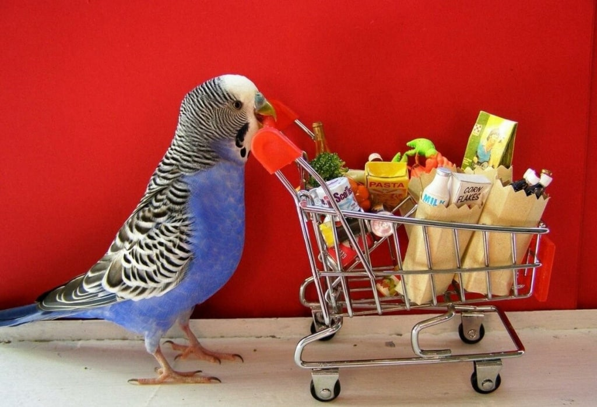
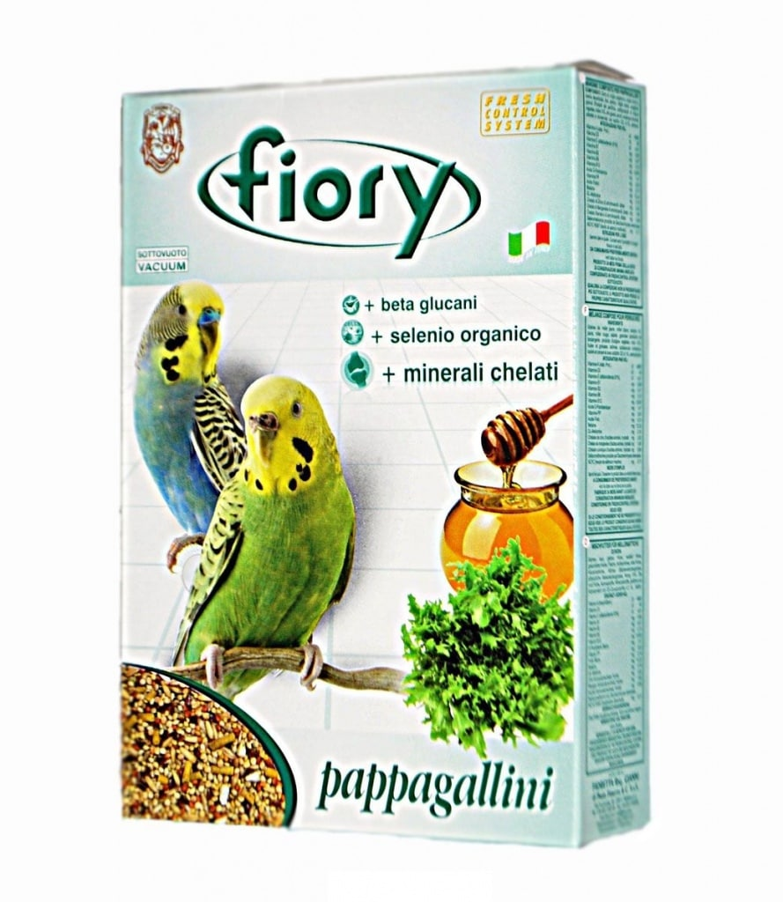
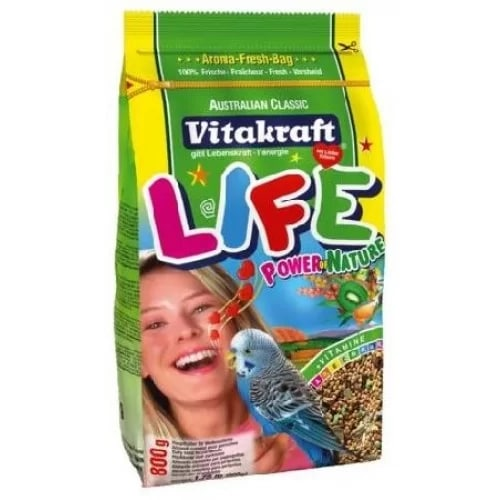
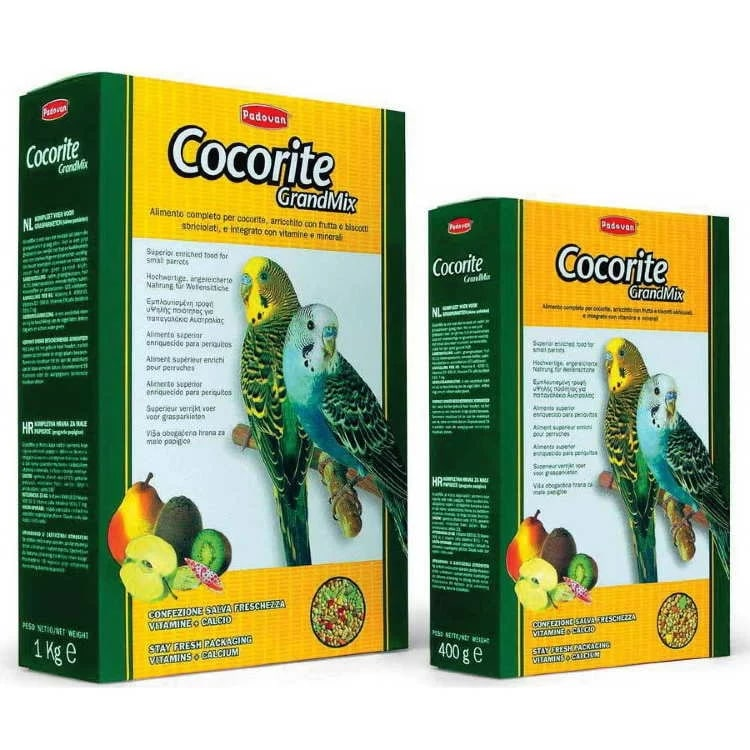
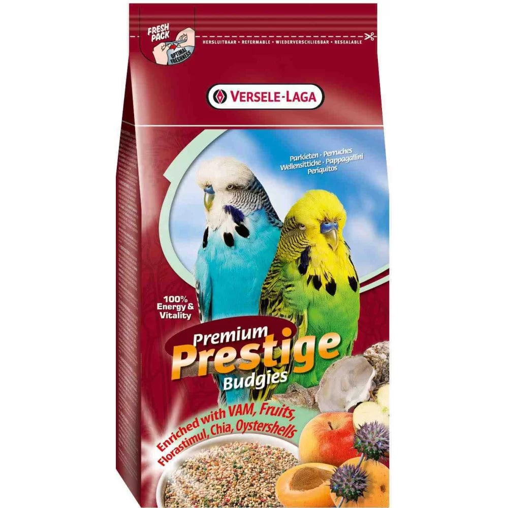
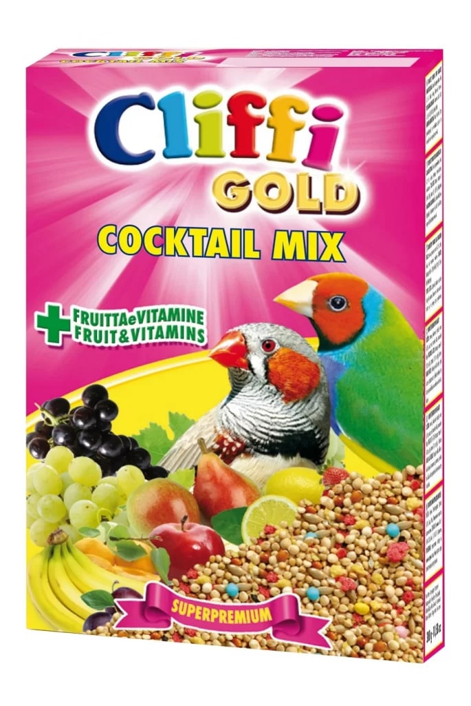

Правильно кормите волнистого попугая. Хорошая диета волнистого попугая в большинстве своем состоит из семян, фруктов и овощей. Постарайтесь также включить в диету волнистого попугайчика гранулированный корм, так как исключительно зерновая диета может приводить к ожирению.

Топ кормов
Fiory
Первое место в рейтинге достаётся корму итальянской марки Fiory. В состав специально разработанной смеси входят различные мелкие семена, в том числе просо, овёс, лён, канареечник. Своеобразной "изюминкой" является редкий ингридиент - сафлор: он полезен для пищеварительной системы и помогает сохранить яркую окраску оперения птицы. В смесь включены гранулы, богатые омега-3 жирными кислотами и минералами в доступной для усвоения форме, включая органический селен - все эти компоненты поддерживают здоровье, красоту и иммунитет попугая. В числе прочих ингредиентов мёд, экстракт юкки для устранения неприятного запаха, а также исключительно натуральные красители и антиоксиданты.
Vitakraft Life
Немецкий корм Vitakraft Life на основе хлебных злаков и семян проса отличается достаточно необычным составом: в нём есть не только привычные зерно, фрукты и мёд, но и листья эвкалипта и киви, а также яйцо и яичные производные. Корм обогащён витаминами и минералами и оказывает всестороннее укрепляющее действие на организм попугайчика. Так, кальций и фосфор в оптимальной пропорции способны надолго сохранить крепкими кости птицы. Бета-глюкан повышает сопротивляемость болезням. Производитель отмечает, что смесь стимулирует естественные инстинкты птиц, что делает её наиболее оптимальным выбором в период размножения.
Grandmix
В линейке Grandmix итальянской фирмы Padovan есть корма для разных видов домашних птиц, в том числе для волнистых попугайчиков. Основой для этой смеси является просо - его здесь целых 68%. Дополняют его канареечное семя, лущёный овёс и вяленые фрукты: груша, яблоко, абрикос. Источником минеральных веществ служат измельчённые ракушки, которые в случае с другими кормами приходится давать отдельно. Сомнения у потребителя могут вызвать только кусочки витаминизированного печенья, содержащие краситель. Хотя птицы чаще всего игнорируют их, многие хозяева рекомендуют на всякий случай выбирать эту добавку из корма и снабжать птичку витаминами посредством свежих овощей и фруктов.
Versele-Laga Prestige Budgies
В отличие от многих других кормов, данный продукт Versele-Laga Prestige Budgies бельгийского производства обходится исключительно натуральными ингредиентами, без красителей и специфических добавок. Благодаря этому корм удобно использовать в качестве основы, дополняя по мере необходимости другой едой. В составе Prestige Budgies три вида проса (жёлтое занимает 52% всего корма, красное и белое в совокупности - 28%), канареечное и льняное семя, очищенный овёс, сафлор и нуг. Особенностью марки является удобная многоразовая упаковка с "окошком", позволяющим рассмотреть корм до покупки, не вскрывая его.
Cliffy
Рецепт этой смеси от компании Cliffy был разработан специалистами Института Орнитологии Италии и включает зёрно, злаки, фрукты и овощи наивысшего качества, а также хлебобулочные изделия и мёд. Тщательно выверенный баланс питательных веществ, витаминов и минеральных солей обеспечит попугаю здоровье на протяжении долгих лет. Кроме того, корм приятно пахнет и нравится птицам на вкус, благодаря чему они подчистую съедают содержимое кормушки. Сохранить лучшие качества итальянской продукции помогает специальная герметичная упаковка.
Советы:
- Никогда не давайте волнистому попугаю шоколад, кофеин, алкоголь или фастфуд. Они токсичны для птицы.
- Проверяйте, что у попугая достаточно воды в поилке. Птица сама знает, сколько ей следует пить. Ежедневно меняйте воду, чтобы не допустить размножения в ней бактерий.
- Добавьте в клетку хрящ каракатицы. Он является хорошим натуральным источником кальция для волнистых попугаев. Вместо него можно использовать минеральные блоки. Некоторые люди используют жидкие витаминно-минеральные добавки, но витамины обычно лучше получать из свежих фруктов и овощей.